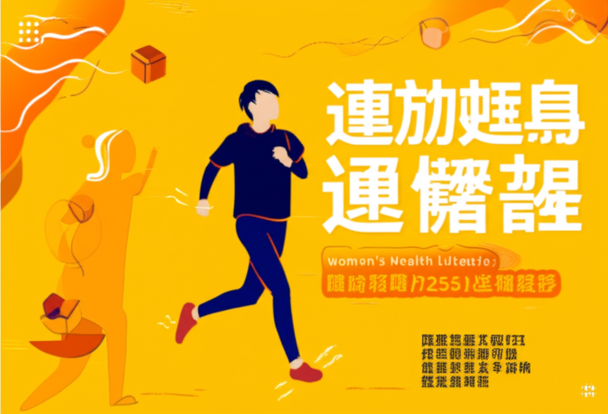

# 運動健身與健康資訊速覽
## 引言
最近的健康資訊圍繞著「超慢跑」、高齡社會的健身需求、以及夏季防曬等主題。從運動科學的角度來看，超慢跑被視為一種有效的運動方式，有助於改善健康狀況。同時，因應高齡化社會，如何維持老年人的肌力也備受關注。此外，炎熱天氣下的防曬與中暑預防也是重要的健康議題。
## 主體內容
### 第一點：超慢跑的熱潮與益處
近期「超慢跑」成為熱門的運動關鍵字。多篇文章提到超慢跑對於改善三高、肥胖甚至失智症的潛在益處。《Women's Health美力圈》更將超慢跑比喻為「天然藥物」。虎頭埤阿勃勒花季也結合了超慢跑活動，顯示其普及性。YouTube 上也出現了醫生講解超慢跑注意事項的影片，強調其重要性，提醒民眾在進行超慢跑前應注意相關事項。
### 第二點：高齡社會的健身與健康議題
台灣已邁入超高齡社會，老年人的健康與運動需求日益重要。PChome Online新聞報導了相關新聞，暗示高齡人口的肌力維持是重要的課題。《【愛健康 醫生來解答】》的影片也聚焦於此，強調老後保命要靠肌力，超慢跑可能是一個適合老年人的運動選擇。
### 第三點：夏季高溫下的防曬與健康風險
TVBS報導陳美鳳在高溫下仍穿長袖的原因，不是單純為了防曬，而是另有原因，這也提醒了我們夏季防曬的重要性。近日台灣多地發布高溫警示，提醒民眾注意防曬與中暑風險。這也暗示了在進行戶外運動時，除了運動本身，環境因素也需要特別留意。
## 結論
總體而言，最近的運動健身與健康資訊強調了超慢跑的益處、高齡社會的健身需求、以及夏季高溫下的健康風險。 超慢跑作為一種簡單易行的運動方式，受到廣泛關注，但仍需注意正確的姿勢和注意事項。面對高齡化社會，如何維持老年人的健康和肌力是重要的社會課題。同時，在高溫環境下運動時，應特別注意防曬與中暑風險。